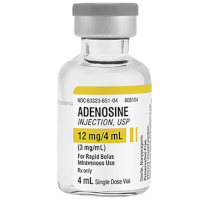
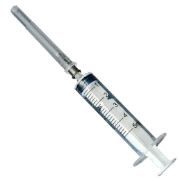

| Adenosina | |||||||||||||
|---|---|---|---|---|---|---|---|---|---|---|---|---|---|
|
 |
|||||||||||||
| Objeto | |||||||||||||
|
|||||||||||||
| Vial | |||||||||||||
| Tamaño del vial | 4ml | ||||||||||||
| Contenido del vial | 12mg | ||||||||||||
| Concentración del vial | 3mg/ml | ||||||||||||
| Medicamento | |||||||||||||
| Vía(s) de administración | Solo IV | ||||||||||||
| Rango de dosis | 6mg | ||||||||||||
| Efectos del medicamento | |||||||||||||
|
|||||||||||||
| Técnico | |||||||||||||
|
|||||||||||||
La adenosina es un medicamento utilizado para tratar ciertas arritmias cardíacas.
Función
La adenosina se utiliza en casos de taquicardia supraventricular. Administrarla provoca una breve interrupción química del corazón con el objetivo de convertir el ritmo.
La adenosina se administra por vía intravenosa con inicio rápido, pico muy corto y corta duración.
La adenosina no tiene efecto si se administra por vía intramuscular.
Uso
La acción Usar jeringa está disponible en el torso y extremidades en la pestaña
 Medicamento
Medicamento
La acción Administrar adenosina está disponible en el torso y extremidades en la pestaña
 Medicamento
Medicamento
Los medicamentos requieren una

jeringa para poder ser preparados y administrados.El acceso IV se consigue con catéteres IV o dispositivos IO.
Dosis
6mg IV
Efectos
- Frecuencia cardíaca: - - -
- Presión arterial: N/A
- Frecuencia respiratoria: N/A
Posibles complicaciones
- Paro cardíaco
Indicaciones
- N/A
Contraindicaciones
- N/A